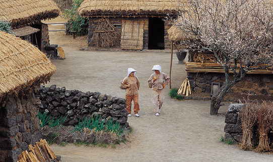
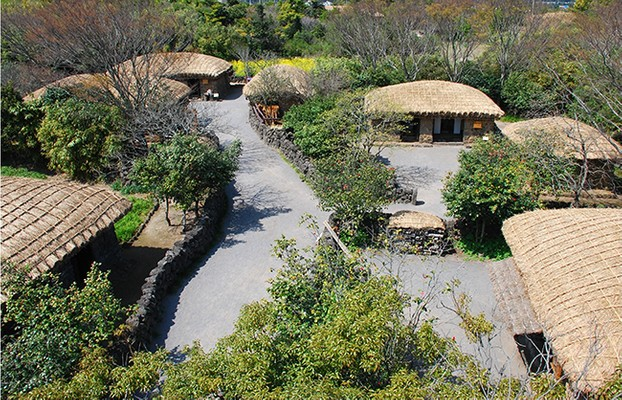
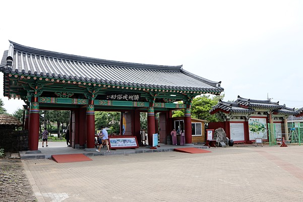

제주민속촌
#제주도 #제주민속촌 #민속마을 #놀이
insta
map
매일 연중무휴 08:30 - 18:00 [관람열차 운영시간] 매일 09:00 - 17:00
064-787-4501
제주민속촌은 제주의 문화유산을 원형 그대로 보존하기 위해 19세기를 기준 연대로
산촌, 중산간촌, 어촌, 토속신앙을 비롯하여 제주영문과 유배소 등을 전문가의 고증을 통해 구성한 박물관 입니다.
특히 100여 채에 달하는 전통가옥은 옛 제주 사람들이 실제 거주하였던 가옥을 전시하였으며, 이 가옥 곳곳에서는 민속공예 장인들이 옛 솜씨를 되살리기 위해 노력하고 있습니다.
제주민속촌은 옛 제주의 모습을 간직한 '제주에서 가장 제주다운 곳'으로서 앞으로도 유무형의 문화유산을 지속적으로 발굴,보존, 계승하여 새로운 문화창조의 터전으로 남아있을 것입니다.
특히 100여 채에 달하는 전통가옥은 옛 제주 사람들이 실제 거주하였던 가옥을 전시하였으며, 이 가옥 곳곳에서는 민속공예 장인들이 옛 솜씨를 되살리기 위해 노력하고 있습니다.
제주민속촌은 옛 제주의 모습을 간직한 '제주에서 가장 제주다운 곳'으로서 앞으로도 유무형의 문화유산을 지속적으로 발굴,보존, 계승하여 새로운 문화창조의 터전으로 남아있을 것입니다.
| 성인(대학생 포함) | 11000원 | |
| 경로(65세 이상) | 9000원 | |
| 청소년(중,고등학생) 및 군경 | 8000원 | |
| 어린이(만4세이상~초등학생) | 8000원 |
제주 서귀포시 표선면 민속해안로 631-34 [지번] 표선리 40-1